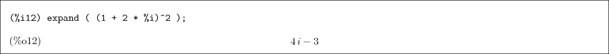

![\begin{boxedminipage}{2.0\linewidth}\index{ {\bf load} \index{load@{\bf load}}}
...
...in{dmath}[number={\%o1}]
\verb\vert qinf.mac\vert\end{dmath}\end{boxedminipage}](img5.png)
There are several tutorials and manuals available for
Maxima. Here is a very brief one focused on aiding the
introduction to the qinf package. We will not give examples
of matrices until later, but point out that the notation for
matrix multiplication in
Maxima is a dot
,
eg. A . B. If
 is a
is a  matix and
matix and  a
a  matrix, then
matrix, then
A . B is a  matrix. The inner
product of quantum state vectors, the
outer product (dyad)
of quantum state vectors, the composition of
operators, and the mapping of one vector to another by an
operator are all special cases of matrix multiplication and
are all represented by the dot (along with conjugation in the case
of the inner and outer products.) The remaining product, the
tensor product, becomes the
Kronecker product in the matrix
representation of a finite dimensional Hilbert space. To
agree with standard terminology, we introduce the
infix
operator otimes and the function tensor_product
that eventually call the Maxima function
kronecker_product . See the
section on matrices
in the Maxima
manual.
matrix. The inner
product of quantum state vectors, the
outer product (dyad)
of quantum state vectors, the composition of
operators, and the mapping of one vector to another by an
operator are all special cases of matrix multiplication and
are all represented by the dot (along with conjugation in the case
of the inner and outer products.) The remaining product, the
tensor product, becomes the
Kronecker product in the matrix
representation of a finite dimensional Hilbert space. To
agree with standard terminology, we introduce the
infix
operator otimes and the function tensor_product
that eventually call the Maxima function
kronecker_product . See the
section on matrices
in the Maxima
manual.
Maxima can use exact real and
complex numbers
or the standard
floating point
approximations, or
arbitrary precision floating point numbers. Numerical expressions are
simplified upon entry. Each input line must be terminated by
a semicolon (some interfaces do this automatically) or by a
dollar sign, which suppresses the output.
![\begin{boxedminipage}{2.0\linewidth}
\begin{verbatim}(%i1) 1 + 1;
\end{verbatim}
\begin{dmath}[number={\%o1}]
2\end{dmath}
\end{boxedminipage}](img11.png)
Assignment
is denoted by a colon while
function definitions
are denoted by
:=
For example, a : b+c ; evaluates b+c and assigns the result to a.
On the other hand a(x,y) := x^y ; defines the function  .
.

We suppress the output here with a dollar sign because it's big-  terms.
terms.
![\begin{boxedminipage}{2.0\linewidth}
\begin{verbatim}(%i5) b : expand( (x+y)^5...
...);
\end{verbatim}
\begin{dmath}[number={\%o6}]
51\end{dmath}\end{boxedminipage}](img15.png)
Some exact numbers and floating point
approximations.
![\begin{boxedminipage}{2.0\linewidth}
\begin{verbatim}(%i7) 1 + sqrt(2);
\end{v...
...}
\begin{dmath}[number={\%o8}]
2.4142135623730949\end{dmath}\end{boxedminipage}](img16.png)
Defining
and using a function.
![\begin{boxedminipage}{2.0\linewidth}
\begin{verbatim}(%i9) f(x) := 3 * cos(x);...
...);
\end{verbatim}
\begin{dmath}[number={\%o11}]
3\end{dmath}\end{boxedminipage}](img17.png)
Complex numbers.
%i
is the identifier for
 .
.

Some special numbers are defined, such as
%pi
and
%e.
![\begin{boxedminipage}{2.0\linewidth}
\begin{verbatim}(%i13) cos(%pi/2);
\end{v...
...);
\end{verbatim}
\begin{dmath}[number={\%o14}]
i\end{dmath}\end{boxedminipage}](img23.png)